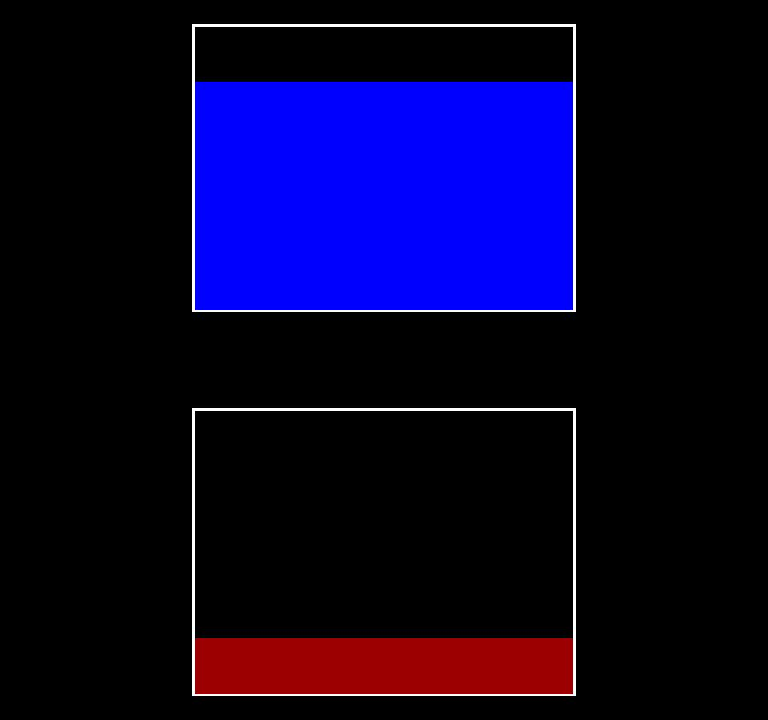

<!DOCTYPE html>
<html>

<head>
    <title>Dictator</title>
    <script src="C:\Users\Josh\OneDrive\Documents\Neuroecon Lab\JavaScript_Exps\jspsych.js"></script>
    <script
        src="C:\Users\Josh\OneDrive\Documents\Neuroecon Lab\JavaScript_Exps\plugins\jspsych-html-keyboard-response.js"></script>
    <script
        src="C:\Users\Josh\OneDrive\Documents\Neuroecon Lab\JavaScript_Exps\plugins\jspsych-image-keyboard-response.js"></script>
    <script
        src="C:\Users\Josh\OneDrive\Documents\Neuroecon Lab\JavaScript_Exps\plugins\jspsych-image-slider-response.js"></script>
    <script src="C:\Users\Josh\OneDrive\Documents\Neuroecon Lab\JavaScript_Exps\plugins\jspsych-xab.js"></script>
    <script
        src="C:\Users\Josh\OneDrive\Documents\Neuroecon Lab\JavaScript_Exps\plugins\jspsych-binary-choice-shifted.js"></script>
    <script src="C:\Users\Josh\OneDrive\Documents\Neuroecon Lab\JavaScript_Exps\plugins\jspsych-fullscreen.js"></script>
    <script
        src="C:\Users\Josh\OneDrive\Documents\Neuroecon Lab\JavaScript_Exps\plugins\jspsych-combinations.js"></script>
    <script src="C:\Users\Josh\OneDrive\Documents\Neuroecon Lab\JavaScript_Exps\plugins\jquery-3.5.1.min.js"></script>
    <link href="C:\Users\Josh\OneDrive\Documents\Neuroecon Lab\JavaScript_Exps\css2\jspsych.css" rel="stylesheet"
        type="text/css">
    </link>
    <script src="https://cdnjs.cloudflare.com/ajax/libs/Chart.js/2.5.0/Chart.min.js"></script>
    <canvas id="myChart" width='100' height='100'></canvas>
</head>

<body>
</body>
<script>
    /*Study Parameters */


    /* create timeline */
    var timeline = [];

    // Fullscreen 
    var fullscreen = {
        type: 'fullscreen',
        fullscreen_mode: true
    };
    timeline.push(fullscreen);

    /* define welcome message trial */
    var welcome = {
        type: "html-keyboard-response",
        stimulus: "Welcome to the experiment. Press the spacebar to begin.",
        choices: [32]
    };
    timeline.push(welcome);

    /** Fixation */
    var fixation = {
        type: 'html-keyboard-response',
        stimulus: '<div style="font-size:60px;">+</div>',
        choices: jsPsych.NO_KEYS,
        trial_duration: 250,
    };


    // Create dictator stimulus files
    var dir = 'Dic_Imgs/';
    var dictator_stim = [dir + '65_35.jpg', dir + '70_30.jpg', dir + '75_25.jpg', dir + '80_20.jpg', dir + '85_15.jpg', dir + '90_10.jpg', dir + '95_5.jpg'];


    // Load charity images
    var dir2 = 'Charity_Imgs/';
    var charity_imgs = [dir2 + 'Animal Rescue.JPG', dir2 + 'Brain Tumor Society.JPG', dir2 + 'Coast Guard Foundation.JPG', dir2 + 'Infant Crisis Services.JPG',
    dir2 + 'Library Foundation of Los Angeles.JPG', dir2 + 'National Pediatric Cancer Foundation.JPG', dir2 + "National Transplant Assistance Fund", dir2 + "Orphan Outreach.JPG",
    dir2 + "Parkinsons Disease Foundation.JPG", dir2 + 'Orangutan Foundation International.JPG'];

    //INSTRUCTIONS AND PRACTICE SCREENS

    var instructions0 = {
        type: "html-keyboard-response",
        stimulus: "<p>This experiment will involve monetary decisions using a point system. Any outcomes " +
            "of the experiment will be in points, which will then be converted to USD ($) once the experiment " +
            "ends. The conversion rate from experimental points to USD is:</p>" +
            "<p><b>1 Point = $0.XX</b></p>" +
            "<p>Press the spacebar to continue.</p>",
        post_trial_gap: 2000,
        choices: [32]
    };
    timeline.push(instructions0);

    var instructions1 = {
        type: "html-keyboard-response",
        stimulus: "<p>In this experiment, you will be making decisions about how " +
            "many points you would like to donate to a charity of your choice. At the start of " +
            "each round, you will be told that you are given some amount of experimental points. " +
            "Then, you will decide between two different divisions of those points.</p>" +
            "<p>Press the spacebar to continue.</p>",
        post_trial_gap: 2000,
        choices: [32]
    };
    timeline.push(instructions1);

    var instructions2 = {
        type: "html-keyboard-response",
        stimulus: "<p>One division will be shown on the left side of the screen, and the other will " +
            "be shown on the right. The percentage of the total amount of points that you " +
            "keep will be represented by the upper bar graph (in blue), and the percentage that will be " +
            "donated will be represented by the lower bar graph (in red).</p><p>Here is an example " +
            "allocation where you would get 80% of the total points, and the charity would receive 20%:</p>" +
            "<div style = 'float: center;'>" +
            "</img></div>" +
            "<p>Press the spacebar to continue.</p>",
        post_trial_gap: 2000,
        choices: [32]
    };
    timeline.push(instructions2);

    var instructions3 = {
        type: "html-keyboard-response",
        stimulus: "<p>Some of the rounds are hypothetical: they will not affect the amount " +
            "of points you (or the charity) will actually receive at the end of the experiment. " +
            "The other rounds, however, are real, and one of them will be randomly selected at the end " +
            "of the experiment to determine how many points you and the charity receive. " +
            "Because one of the real rounds is selected at random, you should treat each decision " +
            "independently: your choice in one round will not affect the outcome of any other round.</p>" +
            "<p>Press the spacebar to continue.</p>",
        post_trial_gap: 2000,
        choices: [32]
    };
    timeline.push(instructions3);


    var instructions4 = {
        type: "html-keyboard-response",
        stimulus: "<p>You will now see an example round. First, a cross will be displayed in " +
            "the center of the screen. Then, two divisions will be shown on the screen, " +
            "and you will select which one you would prefer.</p><p>Use the <b>F</b> key to " +
            "choose the division on the left and the <b>J</b> key to choose the division on the right.</p>" +
            "<p>You will be told the total amount of points before each round.</p>" +
            "<p>Press the spacebar to continue.</p>",
        choices: [32]
    };
    timeline.push(instructions4);


    var example = {
        timeline: [
            {
                type: "html-keyboard-response",
                stimulus: "<p>In this example, the total is 10 points. The right division " +
                    "is 75% (7.5) for you and 25% (2.5) for the charity, while the left division is " +
                    "95% (9.5) for you and 5% (0.5) for the charity.</p>" +
                    "<p>Note that in the actual rounds, you will <b>NOT</b> be told the actual percentages of " +
                    "each graph. You must use the relative sizes of the graphs to make your choice.</p>" +
                    "<p>Rest your fingers on the F and J keys, and press the spacebar to begin the example round.</p>",
                choices: [32]
            },
            fixation,
            {
                type: "binary-choice-shifted",
                stimulus: [dictator_stim[6], dictator_stim[2]],
                choices: ["F", "J"]
            }
        ]
    };
    timeline.push(example);

    var instructions5 = {
        type: "html-keyboard-response",
        stimulus: "<p>You will now complete a practice round to ensure that you understand " +
            "how the graphs work. In this round, we want you to choose the " +
            "division of points that gives more points to you and less to the charity. " +
            "Be sure to take in the information in each side, but try to respond within about " +
            "5 seconds. We will let you know if your response was too fast or too slow.</p>" +
            "Rest your fingers on the F and J keys, and press the spacebar to begin.</p>",
        choices: [32]
    };
    timeline.push(instructions5);

    var practice1 = {
        type: "binary-choice-shifted",
        stimulus: [dictator_stim[5], dictator_stim[0]],
        choices: ["F", "J"]
    };
    timeline.push(fixation, practice1);

    var practice2 = {
        type: 'binary-choice-shifted',
        stimulus: [dictator_stim[2], dictator_stim[6]],
        choices: ["F", "J"]
    };

    var practice3 = {
        type: "binary-choice-shifted",
        stimulus: [dictator_stim[1], dictator_stim[5]],
        choices: ["F", "J"]
    }

    var err_slow = {
        type: 'html-keyboard-response',
        stimulus: "<p>Whoops! You responded too slowly. Let's try that again. " +
            "Please rest your fingers on the F and J keys, and press the spacebar to " +
            "retry the practice trial. Remember, choose the side that gives more to you and less to the charity.</p>",
        choices: [32]
    };

    var err_fast = {
        type: "html-keyboard-response",
        stimulus: "<p>Whoops! You responded too quickly. Let's try that again. " +
            "Please rest your fingers on the F and J keys, and press the spacebar to " +
            "retry the practice trial. Remember, choose the side that gives more to you and less to the charity.</p>",
        chocies: [32]
    };

    var err_slow_last = {
        type: "html-keyboard-response",
        stimulus: `<p>Your response was too slow. For the actual task, please try to respond more quickly.</p>
            <p>Press the space bar to continue.</p>`,
        choices: [32]
    };

    var err_fast_last = {
        type: "html-keyboard-response",
        stimulus: `<p>Your response was too fast. For the actual task, please try to take in the information before making a response.</p>
            <p>Press the space bar to continue.</p>`,
        choices: [32]
    };

    var err_acc = {
        type: "html-keyboard-response",
        stimulus: "<p>Whoops! Let's try that again. Remember, we want you to choose the side where you earn more, relative to the charity. In " +
            "other words, choose the side that gives you a higher reward and the charity a smaller reward.</p>" +
            "<p>Press the space bar to continue.</p>",
        choices: [32]
    };

    var err_acc_last = {
        type: 'html-keyboard response',
        stimulus: "<p>You failed to choose the correct side. Remember, the percentage of the total points " +
            "that you keep is represented by the upper bar graph in blue, and the percentage that is given to " +
            "charity is represented by the lower bar graph in red.</p>" +
            "<p>Press the space bar to continue.</p>",
        choices: [32]
    };

    var conditional_fast = {
        timeline: [err_fast, fixation, practice2],
        conditional_function: function () {
            var data = jsPsych.data.get().last(1).values()[0];
            if (data.rt >= 500) {
                window.fast1 = false;
                return false;
            } else {
                window.fast1 = true;
                return true;
            }
        }
    };
    timeline.push(conditional_fast);

    var conditional_slow = {
        timeline: [err_slow, fixation, practice2],
        conditional_function: function () {
            var data = jsPsych.data.get().last(1).values()[0];
            if (data.rt <= 5500 || fast1 == true) {
                window.slow1 = false;
                return false;
            } else {
                window.slow1 = true;
                return true;
            }
        }
    };
    timeline.push(conditional_slow);

    var conditional_incorrect = {
        timeline: [err_acc, fixation, practice2],
        conditional_function: function () {
            var data = jsPsych.data.get().last(1).values()[0];
            if (data.key_press == jsPsych.pluginAPI.convertKeyCharacterToKeyCode('j') && fast1 != true && slow1 != true) {
                window.acc = false;
                return true;
            } else {
                window.acc = true;
                return false;
            }
        }
    };
    timeline.push(conditional_incorrect);

    var conditional2_slow = {
        timeline: [err_slow, fixation, practice3],
        conditional_function: function () {
            var data = jsPsych.data.get().last(1).values()[0];
            if (data.rt <= 5500) {
                window.slow2 = false;
                return false;
            } else {
                window.slow2 = true;
                return true;
            }
        }
    };
    timeline.push(conditional2_slow);

    var conditional2_fast = {
        timeline: [err_fast, fixation, practice3],
        conditional_function: function () {
            var data = jsPsych.data.get().last(1).values()[0];
            if (data.rt >= 500 || slow2 == true) {
                window.fast2 = false;
                return false;
            } else {
                window.fast2 = true;
                return true;
            }
        }
    };
    timeline.push(conditional2_fast);

    var conditional2_incorrect = {
        timeline: [err_acc, fixation, practice3],
        conditional_function: function () {
            var data = jsPsych.data.get().last(1).values()[0];
            if (acc == false && data.key_press == jsPsych.pluginAPI.convertKeyCharacterToKeyCode('f') && fast2 != true && slow2 != true) {
                window.acc2 = false;
                return true;
            } else {
                window.acc2 = true;
                return false;
            }
        }
    };
    timeline.push(conditional2_incorrect);

    var conditional3_slow = {
        timeline: [err_slow_last],
        conditional_function: function () {
            var data = jsPsych.data.get().last(1).values()[0];
            if (data.rt <= 5500) {
                window.slow3 = false;
                return false;
            } else {
                window.slow3 = true;
                return true;
            }
        }
    };
    timeline.push(conditional3_slow);


    var conditional3_fast = {
        timeline: [err_fast_last],
        conditional_function: function () {
            var data = jsPsych.data.get().last(1).values()[0];
            if (data.rt >= 500 || slow3 == true) {
                window.fast3 = false;
                return false;
            } else {
                window.fast3 = true;
                return true;
            }
        }
    };
    timeline.push(conditional3_fast);

    var conditional3_incorrect = {
        timeline: [err_acc_last],
        conditional_function: function () {
            var data = jsPsych.data.get().last(1).values()[0];
            if (acc2 == false && data.key_press == jsPsych.pluginAPI.convertKeyCharacterToKeyCode('f') && fast3 != true && slow3 != true) {
                return true;
            } else {
                return false;
            }
        }
    };
    timeline.push(conditional3_incorrect);


    var practiceEnd = {
        type: 'html-keyboard-response',
        stimulus: `<p>You have completed the practice section. You will now begin the main task. </p>
            <p>Remember to keep your fingers on the <b>F</b> and <b>J</b> keys before you begin each round.<p>
            <p>Press the space bar to begin the task.</p>`,
        choices: ['space']
    };
    timeline.push(practiceEnd);


    var rnum = Math.floor(7 * Math.random());
   /* var lowPair = low_lott_pairs[rnum];
    var highPair = high_lott_pairs[rnum]; */

    var realLow =
        "<p>The following round will be a <strong>REAL</strong> decision, " +
        "which means that the division you choose could be used at the " +
        "end of the experiment to determine your reward and the donation to charity.</p>" +
        "<p>The total amount of points for this round is <strong>1.6</strong>.</p>" +
        "<p>Rest your fingers on the F and J keys, and press the spacebar to continue.</p>";

    var realHigh =
        "<p>The following round will be a <strong>REAL</strong> decision, " +
        "which means that the division you choose could be used at the " +
        "end of the experiment to determine your reward and the donation to charity.</p>" +
        "<p>The total amount of points for this round is <strong>32</strong>.</p>" +
        "<p>Rest your fingers on the F and J keys, and press the spacebar to continue.</p>";

    var hypLow =
        "<p>The following round will be a <strong>HYPOTHETICAL</strong> decision, " +
        "which means that the division you choose will <strong>NOT</strong> be used at the " +
        "end of the experiment to determine your reward or the donation to charity.</p>" +
        "<p>The total amount of points for this round is <strong>1.6</strong>.</p>" +
        "<p>Rest your fingers on the F and J keys, and press the spacebar to continue.</p>";

    var hypHigh =
        "<p>The following round will be a <strong>HYPOTHETICAL</strong> decision, " +
        "which means that the division you choose will <strong>NOT</strong> be used at the " +
        "end of the experiment to determine your reward or the donation to charity.</p>" +
        "<p>The total amount of points for this round is <strong>32</strong>.</p>" +
        "<p>Rest your fingers on the F and J keys, and press the spacebar to continue.</p>";


    var counterBal = Math.random;


    var dictator_procedure = {
        timeline: [
            {
                type: "html-keyboard-response",
                stimulus: jsPsych.timelineVariable('instruc'),
                choices: [32]
            },
            fixation,
            {
                type: "binary-choice-shifted",
                stimulus: jsPsych.timelineVariable('choice'),
                choices: ["F", "J"]
            }
        ],
        timeline_variables: [
            { instruc: realLow, choice: jsPsych.randomization.sampleWithoutReplacement(dictator_stim, 2) },
            { instruc: realHigh, choice: jsPsych.randomization.sampleWithoutReplacement(dictator_stim, 2) },
            { instruc: hypLow, choice: jsPsych.randomization.sampleWithoutReplacement(dictator_stim, 2) },
            { instruc: hypHigh, choice: jsPsych.randomization.sampleWithoutReplacement(dictator_stim, 2) },
        ],
        randomize_order: true,
    };
    timeline.push(dictator_procedure);

    /*
        var lottery_procedure2 = {
            timeline: [
                {
                    type: "html-keyboard-response",
                    stimulus: jsPsych.timelineVariable('instruc'),
                    choices: [32]
                },
                fixation,
                {
                    type: "binary-choice-shifted",
                    stimulus: jsPsych.timelineVariable('choice'),
                    choices: ["F", "J"]
                }
            ],
            timeline_variables: [
                { instruc: hypInstruc, choice: jsPsych.randomization.sampleWithoutReplacement(low_lott_pairs[4], 2) },
                { instruc: hypInstruc, choice: jsPsych.randomization.sampleWithoutReplacement(high_lott_pairs[4], 2) },
                { instruc: hypInstruc, choice: jsPsych.randomization.sampleWithoutReplacement(lowEV_pairs[0], 2) },
                { instruc: hypInstruc, choice: jsPsych.randomization.sampleWithoutReplacement(highEV_pairs[0], 2) },
                { instruc: realInstruc, choice: jsPsych.randomization.sampleWithoutReplacement(low_lott_pairs[5], 2) },
                { instruc: realInstruc, choice: jsPsych.randomization.sampleWithoutReplacement(high_lott_pairs[5], 2) },
                { instruc: realInstruc, choice: jsPsych.randomization.sampleWithoutReplacement(lowEV_pairs[1], 2) },
                { instruc: realInstruc, choice: jsPsych.randomization.sampleWithoutReplacement(highEV_pairs[1], 2) }
            ],
            randomize_order: true,
            conditional_function: function () {
                if (counterBal < 0.5) {
                    return false;
                } else {
                    return true;
                }
            }
        };
        timeline.push(lottery_procedure2);
    */

    var end = {
        type: "html-keyboard-response",
        stimulus: "<p>You have completed the task. Press any key to exit.</p>"
    };
    timeline.push(end)

    jsPsych.init({
        timeline: timeline,
        on_finish: function () {
            //jsPsych.data.get().localSave('csv', 'mydata.csv');
            //saveData("experiment_data", jsPsych.data.get().csv()); 
            // code to define the experiment structure would go here...
        }
    });

</script>

</html>